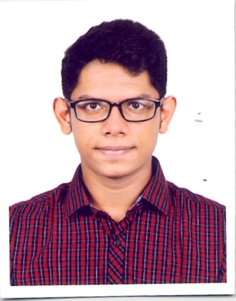

Contact:+8801700503956
Email ID:hamidsaymon9@gmail.com
Linkdin ID:https://www.linkedin.com/in/akther-hamid-saymon-2a7036166/
To do my work honestly & achieve a higher level of success with hardworking, dedication and devotion to the assigned job in the assigned field.
=>Bachelor of Science in Cse from American International Unversity Bangladesh in year 2018 Cgpa of 3.73
=>Passed Higher.Secondary.Certificate from Moulvibazar Goverment College in year 2014 with Gpa 4.25.
=>Passed Secondary.School.Certificate from Moulvibazar Goverment High School in year 2012 with Gpa 5.00.
=>Father Name: Md Mizanul Karim
=>Mother Name: Parvin Akther
=>Present Address: 335/4,3rd Floor,East Rampura,T.V Road Dhaka-1219
=>Permanent Address:Shahsidal,Comilla
=>Date of Birth: 10/2/1995
=>Nationality: Bangladesh.
=>Blood Group: "O" postive.
=>Matrial Status: Unmarriage.
=>Religion: Islam.
=>Languages: C,C++,HTML,Java,C#,Javascript,CSS,PHP.
=>Operating System: Windows 98, 2000, 2003, Vista and 2007,Unix.
=>Office Tools: Ms Excess, Ms Excel, Ms Power point and MS-Word.
=>Databases: Oracle, SQL,Mysql.
=>Mini Projects: Calculator Banking system.
language:C,C++.
=>Major Projects:School Management system, Automobile Showroom Management system,Voice Chatting system,E-commerce etc
language:Java ,C#,Html,Xml,Css,Php,Javascript
Database: Oracle,MySql,MsSql.
=>Good at communication skills.
=>Good interpersonal.
=>Reasoning ability.
=>Keen observer.
=>Analytical skills.
=>Quick learner.
=>Multi tasker.
=>Volunteer in Aiub Cs Fest 2017 at Amercian International University Bangladesh.
=>Volunteer in Aiub Cyber Gaming Fest 2018 at Amercian International University Bangladesh.
=>Volunteer in Aiub Girl Programming Contest 2017 at Amercian International University Bangladesh.